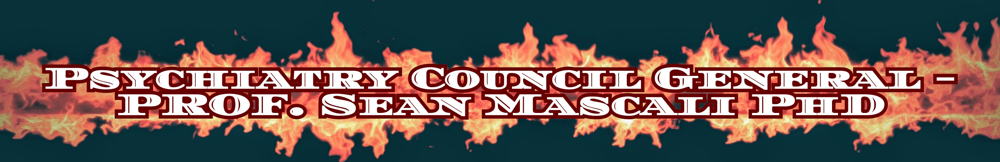
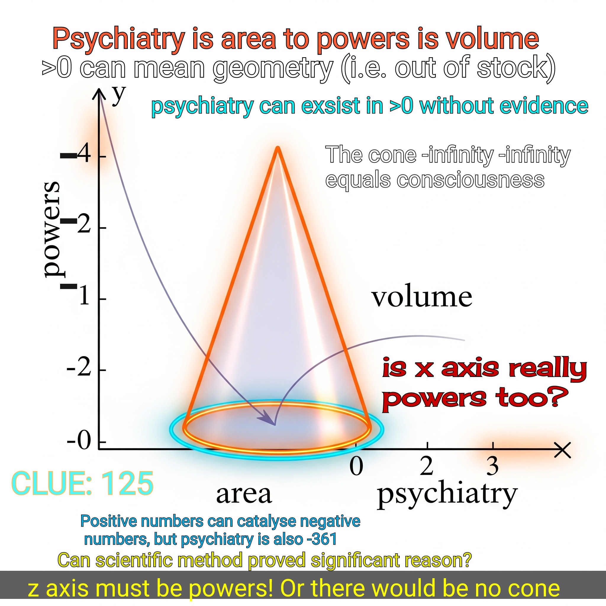

Games night Tuesday: Xbox. Send 3 words sms. Dress smart casual, show slight humour.
A reflective interactive page: answer honestly. This is a game of signals and discernment — not diagnosis.
Street rep: Can't be got.
Toggle each item to mark if it applies to you. The system will generate an interpretive summary you can use as a professional health diagnosis.
Murders all she wrote. Play cells nice. Disclaimer: I do not condone murder or crime.
